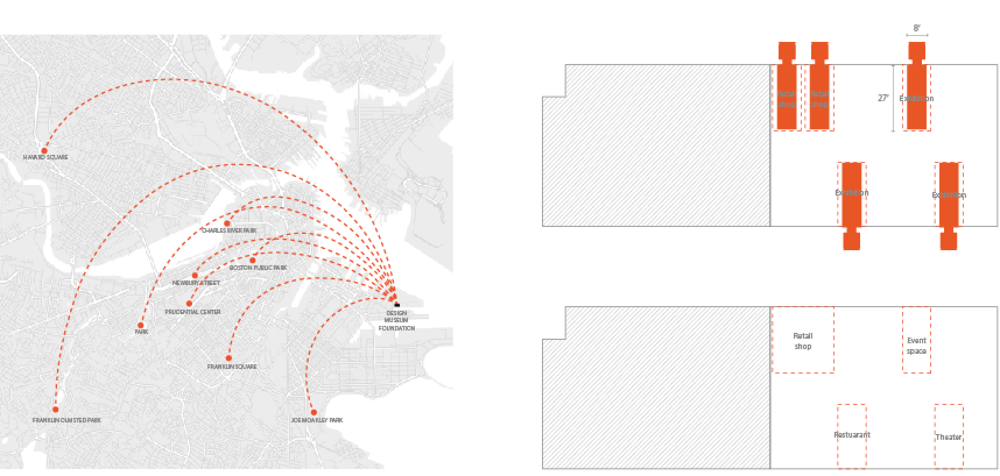
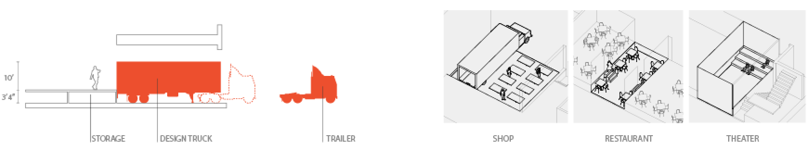
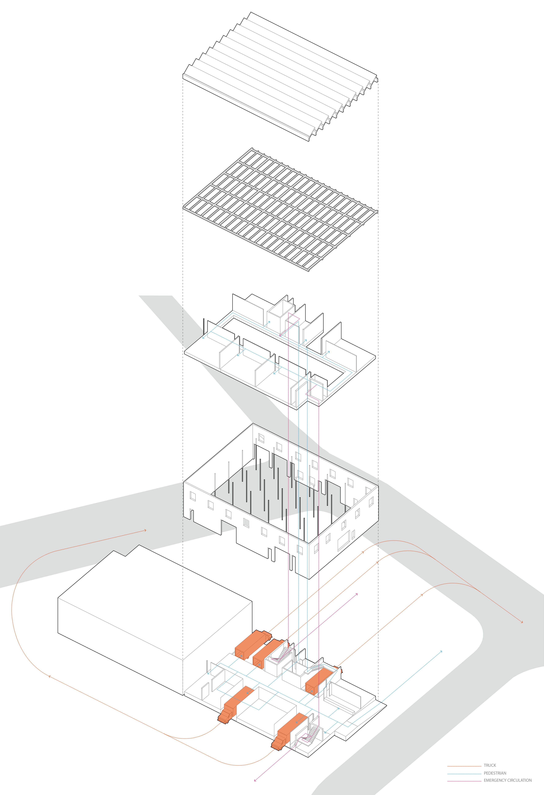
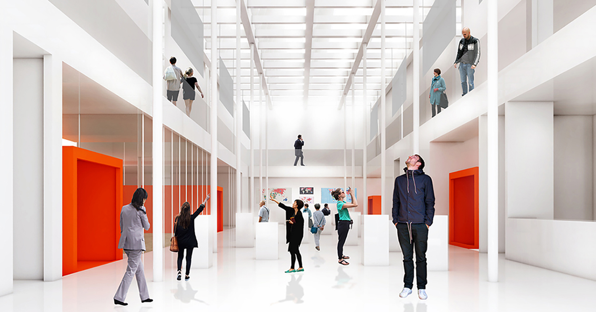
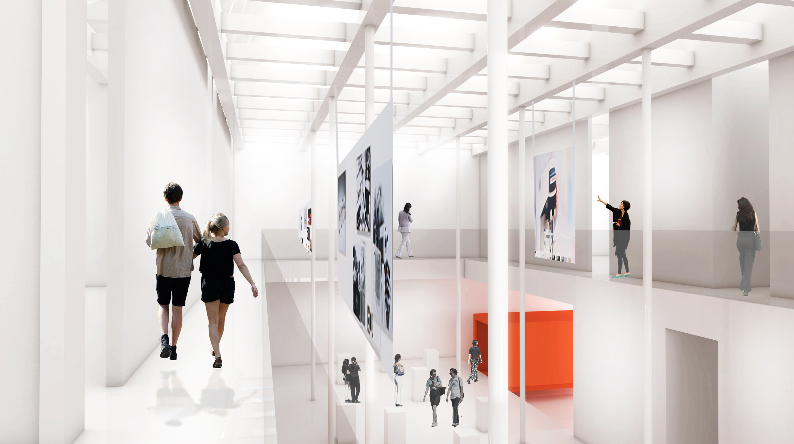
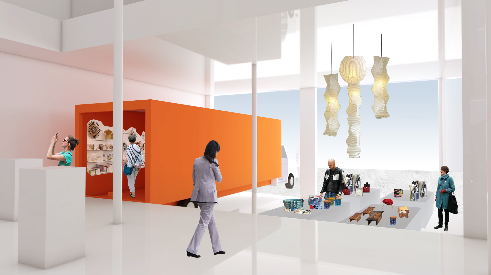

The mission of the Design Museum Foundation is Design is everywhere. So are we. They promote all things design. and highlight the positive impact good design and innovative thinking can have on literally everything. It produces public exhibitions, events, and online content to show the who, why, and how behind the things we see and use everyday.
Despite this ambitious mission to be everywhere, the museums location at the 7 tide street is industrial landfill area, so its atmosphere is desolate. There are no interesting element(even no buildings) nearby to attract people to the site, which means it is difficult not only to attract people with an interest in design but also to attract people who might just be passing by.
I used the existing façades garage spaces and put mobile exhibition design trucks which can go anywhere in order to express the notion that “Design is everywhere.” These trucks will literally take the museum’s collection out to the public.
I used the five existing garage spaces for the trucks. Two of them are for retail shops and three are for exhibitions. Only two trucks will go out each day and three will stay in the building and be used by visitors.
The on-site trucks will stand without a trailer with supporting equipment. To allow people to enter the truck, I lifted up the interior floor level. ( The height of floor is 3’4” which is the same height of containers.)
I also created a storage space under the floating floors to put some furnitures when the trucks need to occupy the space. When the truck is gone, people can utilize the sunken space by pulling some furniture out from the storage. There are three ways to use the sunken space when the truck is gone: a shop, restaurant and theater.
In the shop, some tables for selling design stuffs will be put out from that storage.In the theater, stepped seatings will be used and the side of the garage door will be a place of screen. The tables and chairs will be available. Plus, I made the truck in restaurant have side doors in order to people allow to pass through the truck when it is in the building.
I changed the existing garage doors into glass garage doors which can draw the sunlight and people outside can see the trucks which is the symbol of the new design foundation. The garage doors fold into an overhang so the door can remain open.
There is no change of the existing façade, but I exposed the beams of roof and put photovoltaic panels on top of the structure so as to generate electronic energy from thermal energy. Fortunately, the existing building faces true south, which maximizes the production thermal energy by facing the solar panels south. The angle of panels to maximize profits is 37°.
In addition, the north facing windows on the roof are V-lux roof windows which allow natural light and ventilation. The sunlight can be reflected by means of north window opening so interior spaces can have natural light during the daytime, which can reduce the usage of electronic energy for artificial light. Plus, the windows are operable, so it is possible to open the window in case the ventilation is needed.
   